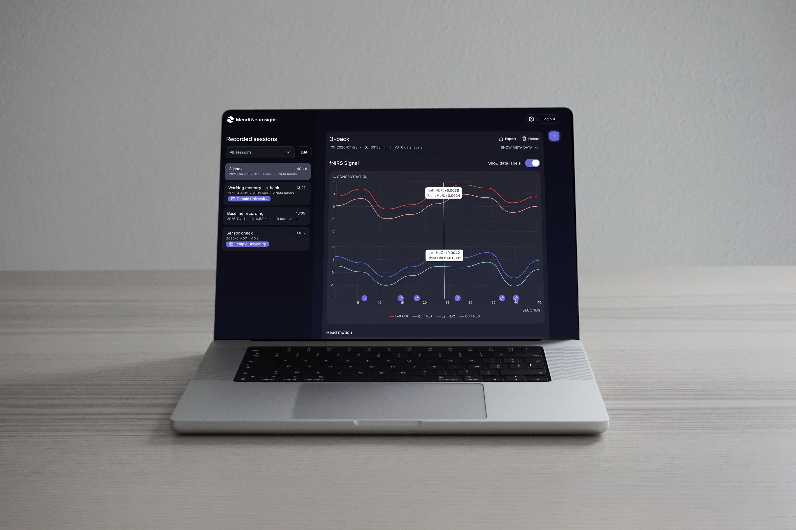
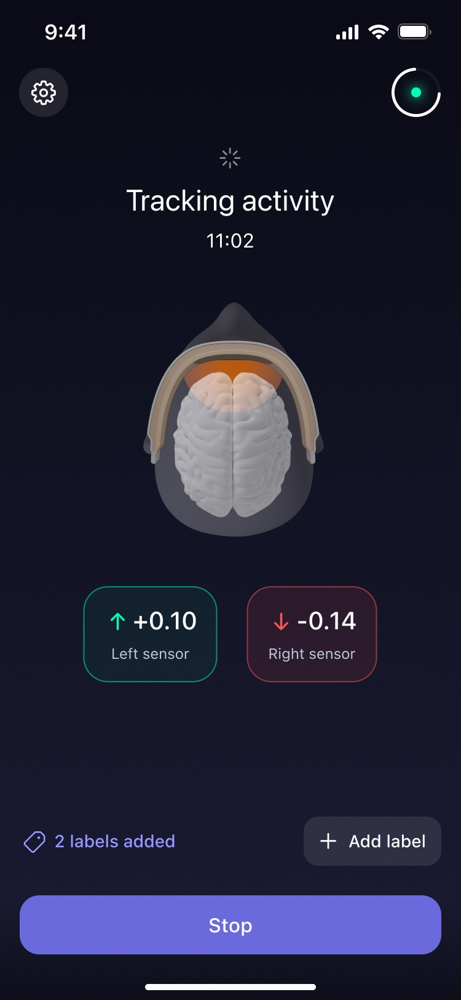
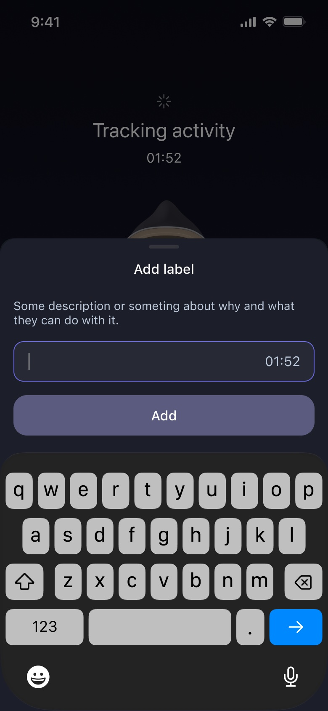
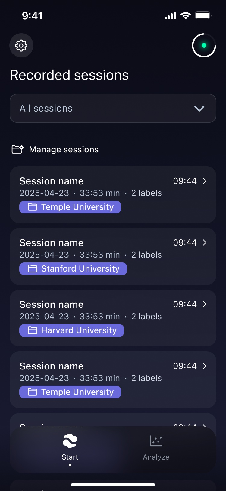
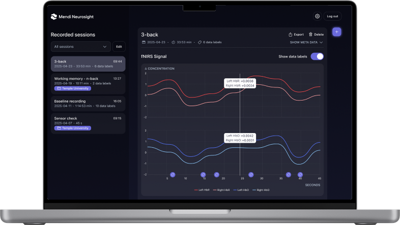
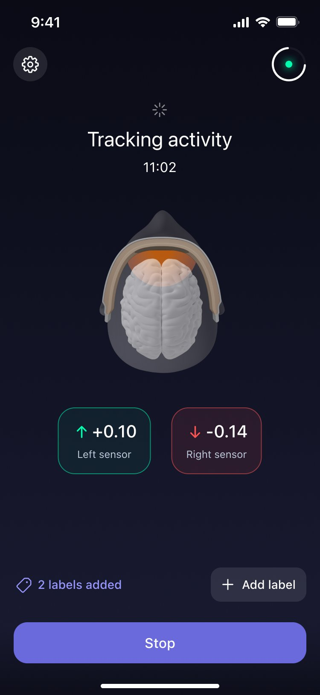
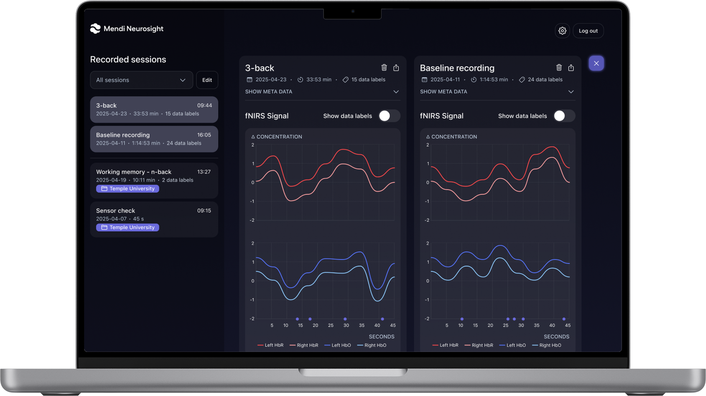

Turning consumer neurotech into a research tool.

Researchers around the world were already interested in using Mendi's portable fNIRS technology in their studies. The opportunity was to turn that demand into a product: an MVP that let researchers collect and work with brain data using hardware originally designed for consumers.
I led the end-to-end experience across mobile and web, translating complex research workflows into a product that was simple to set up, use and scale.



Mobile app

Public Website
I knew our consumer users well. Researchers were a completely different story.
I interviewed researchers interested in using Mendi in their studies, learning how they planned experiments, recorded sessions and worked with the resulting data. Alongside this, I worked closely with our product owner, who brought deep neuroscience and fNIRS expertise.
What sounded simple at first — record an fNIRS session and save the data — quickly became more complex.
Researchers could be running several studies at once, with multiple sessions in each. They needed to organise their work, mark what happened during a recording and come back to it later.
What started as a way to record data was becoming a way to manage the research around it.
Record an fNIRS session and capture data
Organise several research projects at once.
Manage multiple sessions within each study.
Add context to key moments and revisit them later.
Capture data where the session happens.
Review, export and analyse recorded data.
The mobile app stayed focused on the experiment itself: connecting the device, starting a session, monitoring the signal and marking events as they happened.
The web experience gave researchers space to organise their work, revisit recordings and compare sessions.
Rather than squeeze everything into both, I designed each around the job it needed to do.

Record sessions, monitor the signal and mark events as they happen.

Organise sessions, inspect signals and compare recordings side by side.
Within the first year:
NeuroSight turned an unexpected use of Mendi's technology into a product of its own. What began with researchers asking for access to fNIRS data became a dedicated research platform.
In doing so, it expanded Mendi beyond its consumer audience and established research as a new B2B use case for the technology.